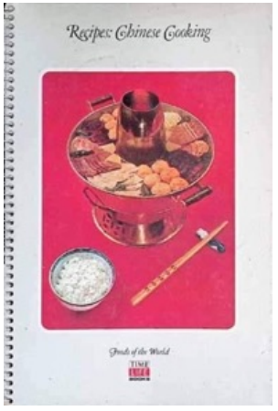
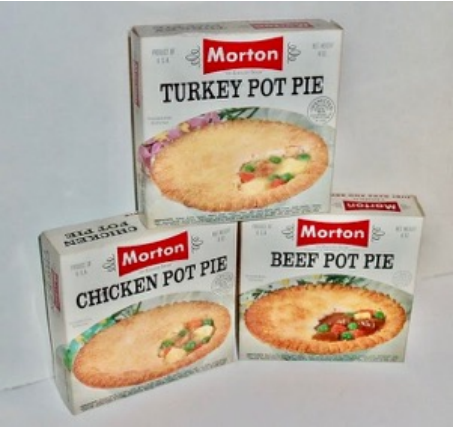
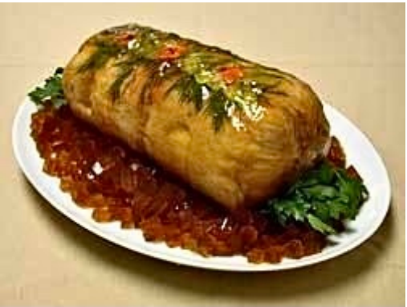
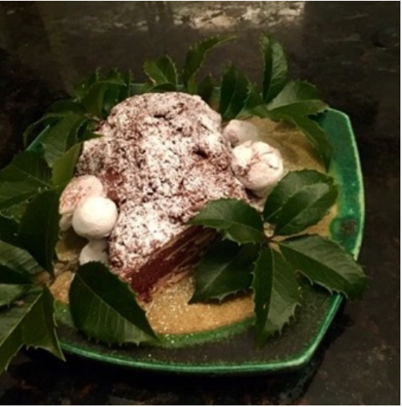

As I zested lemon rind for salmon filets to roast the other evening, I flashed back to my favorite dessert that my grandmother would make when she visited. It was lemon meringue pie. I just loved it and was sure there was a special family recipe to be learned. When I was 12, I finally asked Gaga (our nickname for her) if she would share her recipe. She happily revealed that she used Jell-O lemon pie filling! There was no secret family recipe at all. This was the first of many culinary disappointments and bumps along the road of my kitchen education!
I did not grow up in a family with a doting Italian grandmother who hovered for hours over her tomato sauce made from fresh garden herbs and tomatoes. I grew up thinking Italian meant Chef Boyardee. Pot pies came from Morton Frozen Foods. Spinach grew in the freezer. Modern convenience was the motto in the family kitchen. When I first became interested in cooking as a curious preteen, I wanted to make pizza. I had heard of pizza, I knew it was a “thing,” but had never tasted or seen it. I found a Chef Boyardee box in the cupboard that said Pizza on the label. Yes! I had seen pizza referred to as pizza pie, and imagined something akin to the Al Malnati’s deep dish we love today. Imagine my disappointment when I discovered that the dough was flat, just smeared with tomato sauce and a scattering of cheese.
My one childhood memory that hinted at the joys of cooking with fresh food was Thanksgiving. My father put on the apron and made the turkey stuffing from scratch. Whenever I smell onions and sage frying in a pan of sizzling butter, I remember cutting the bread into cubes for Daddy as he sauteed the seasonings. My father would have loved the blossoming of the home gourmet cook; he was very creative, making meatloaf in funny shapes to entertain us.
I realize I’m not giving my mother enough credit. She created lovely dinner parties, but usually with the same menu: beef tenderloin and meringue with fruit and ice cream for dessert (which I now know is a pavlova). She relied on the Joy of Cooking and a few service organization cookbooks. She once joked that because she skipped kindergarten, she had no interest or skill at cooking, sewing, and other hands-on domestic activities. Her career would take her in a more intellectual direction to museums and libraries.
My own interest in cooking was certainly there, and I decided to pursue my Girl Scout cooking badge. This was the beginning of my discovery that mistakes could be hidden or remedied (more about that later)! To get the badge, one needed to prepare a meal for one’s family. I decided on hamburgers, one of the few things I had learned to make. My parents and sister were waiting in the dining room. I dutifully lifted the burgers from the frying pan onto a plate. As I walked toward the door, I apparently tilted the plate and the burgers slipped to the floor (fortunately we had no open floor plan!)! Without missing a beat, I picked them up, opened the door, and proudly carried them into the dining room. No one ever knew, and I got my badge.
I remained basically culinarily ignorant through college. Freshman year, I was discussing food with a sophisticated New York classmate and mentioned how much I liked “coq de vin.” She icily responded, “It’s coq au vin.” Ouch. I was determined to improve my knowledge of French cuisine. My chance came when working in Washington DC; Julia Child and her WGBH television show appeared on my radar screen. She was compelling! I began trying her recipes. For my first dinner cooked for my later-fiancé Tobin, I made Julia’s Beef Bourguignon recipe, made famous more recently in the Julie and Julia movie.
I watched to my silent dismay as Tobin carefully picked out every mushroom. It turned out he had been put off mushrooms by his childhood Babar book in which Babar’s father, the king, died of mushroom poisoning. In the book’s illustration, the dying king is a sickly green. To his credit, Tobin also knew of a local official who died of mushroom poisoning. He also disliked the smell when his mother sauteed mushrooms. Tobin would marry me anyway.
Before the wedding, however, Tobin had a military obligation and spent a year in Vietnam, advising a province official outside Saigon. To help pass that challenging year, I decided to take a cooking class. The local Y offered a course in Chinese cooking, taught by the wife of the Chinese ambassador. Her recommended cookbook, much to my surprise, was the Chinese volume of the Time Life “Foods of the World” series. (I have since found the rest of series to be excellent as well). I loved the class and couldn’t wait to show Tobin my new skills. Not surprisingly, Chinese food was not on his personal list of food he’d missed in Vietnam. Other options were necessary.

In the early years of my marriage, despite Julia, I had not shaken off my childhood tastes. When my husband was in law school at the University of Virginia, we lived our first year in the tiny community of Crozet, VA. Imagine my delight when I discovered a Morton Frozen Foods plant within a mile of our country cottage. I was a regular customer of the outlet store.

I was saved from a life of frozen food, however, by the UVA Law Wives group. (husbands of the handful of female law students were also welcome). Lamenting the then lack of decent restaurants in Charlottesville (with only one white-tablecloth option), we established the Law Wives Supper Club. Divided into rotating groups of four couples, one pair would plan the menu and each couple would be responsible for one element of the dinner. And what marvelous meals we had! Among the recipes I tasted and made for the first time were ceviche, dacquoise, and veau Prince Orloff. Those who participated were very interested in fine dining and in some cases excellent cooks. I still have many of the menus among my cookbooks.
Once married and living in Chicago, I began to try more and more complicated recipes. Among the more challenging was a galantine (French for “bundle”): a boned chicken, duck or turkey stuffed with ground pork and/or other meats with nuts and other additions that create a pattern when sliced. Poached, chilled, covered with aspic featuring embedded carefully carved vegetables, it was to be the centerpiece for a dinner party. I managed to bone and stuff my chicken, poach it, and chill it. A galantine is large and heavy (at least mine was). Harking back to my Girl Scout days, as I took it out of the refrigerator to cover it in aspic, to my horror, I dropped it on the floor. Luckily, it did not splat but split. I was able to salvage it by pressing the crack together and hiding it in elegantly decorated aspic. Once was enough. I have not made a galantine since.

I did continue to try what I called the “I should be able to do this” recipes, like sweetbreads, puff pastry, souffles and stuffed lamb en croute with varying degrees of success. But as I convinced myself that I could follow the most complicated of recipes, a new ingredient became an essential element of my calculations: time. Did I mention that I made these recipes before my first child was born? Suddenly with my son’s arrival there was no time to experiment. Dinners were now simple or delegated to the nanny or my husband, depending on who was working late. I tapped my Chinese cooking classes to make stir-fries that gave me chopping time to unwind from work and then virtually instant cooking time.
Now that the children are grown and on their own, have I pulled out my stained, dog-eared copies of Mastering the Art of French Cooking or From Julia Child’s Kitchen? For many years, I did at Christmas, to make fruitcake or a buche de Noel, but that’s been about it. Even during the pandemic, I did not learn to bake sour dough bread. We’re now trying to limit most of the ingredients that make those recipes so good: butter, sugar, and those pesky carbs like bread and pastry. My most recent cooking approach is the ubiquitous sheet pan dinner. One can combine salmon, broccoli, sweet potato slices, with a bit of olive oil and seasoning on a sheet pan at 400 degrees for 20 minutes, and dinner is ready.

These days, I often get my culinary kicks virtually through The Great British Baking Show, Chef’s Table or Chopped. My shopping list includes 2% yogurt instead of sour cream, olive oil instead of butter, whole wheat bread instead of French baguettes, plus fresh spinach, blueberries, and avocados (anti-inflammatory and healthy fats anyone?). I search the Green City Market for unusual vegetables. I don’t want anyone to think we’re depriving ourselves of tasty food. These newer options are delicious; creativity is still necessary. I know my father would be delighted to see how society has encouraged serious home cooking. I wonder if my mother would lean toward Blue Apron delivered!